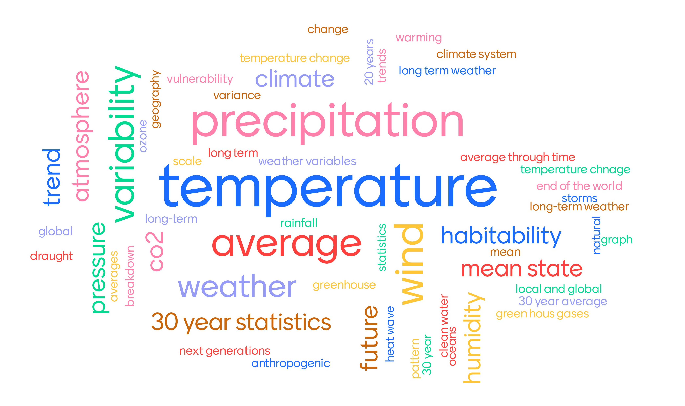
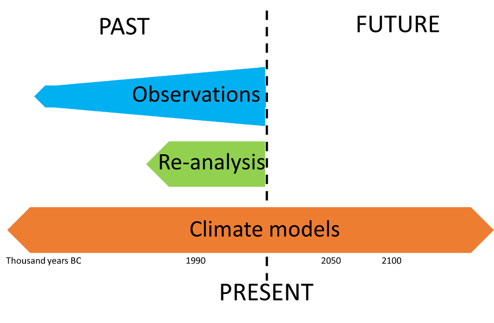
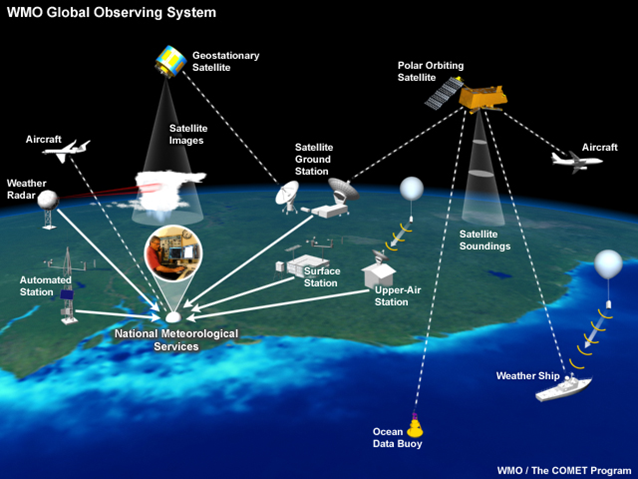
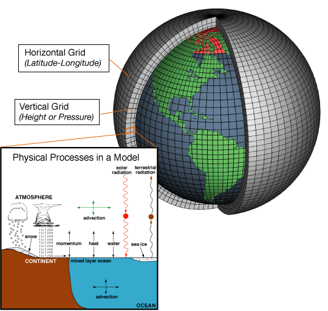
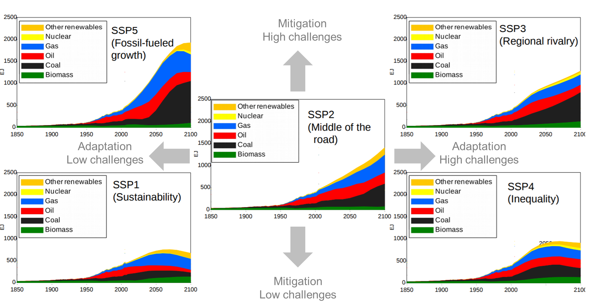

Introduction to climate data
Contributors
What do we mean by “Climate”?
Wikipedia: Climate is defined as the average state of everyday’s weather condition over a period of 30 years. It is measured by assessing the patterns of variation in terms of temperature, humidity, atmospheric pressure, wind, precipitation, atmospheric particle count and other meteorological variables in a given region over long periods of time.

Speaker Notes
- Before we start to dig into climate data, let’s define the word “climate”.
- If we read the definition on wikipedia, we have: climate is defined as the average state of everyday’s weather condition over a period of 30 years.
- The time period of 30 years may be discussed.
-
Some scientists would refer to 20 years. Anyway, the idea is that climate is measured by assessing the patterns of variation in terms of temperature, humidity, atmospheric pressure, wind, precipitation, atmospheric particle count and other meteorological variables in a given region over long periods of time.
Weather versus climate
Climate differs from weather, in that weather only describes the short-term conditions of these variables in a given region.

Watch this Video to get an illustration of the difference between climate and weather.
Source: Animated short on statistics from Norwegian infotainment program Siffer. Produced by TeddyTV for NRK. Animation by Ole Christoffer Haga
Speaker Notes
- There is often a confusion among the general public between the notions of “weather” and “climate”.
- It is therefore important to clarify the differences between short-term (weather) versus long-term variations (climate).
- And, local or regional (weather) versus global scales (climate).
- We also want to provide indications about what can be expected regarding weather.
- We can ask questions such as: is it going to rain tomorrow in a particular region?
- For climate, the question could be: what is the global temperature trend?
Types of climate data resources
- Observations: usually the most reliable, but there are little actual observations at the scale of climate and covering a large area;
- Re-analyses: these combine observations with numerical models to produce “best estimates” of climate variables;
- Climate models: climate variables produced by numerical simulations only.
Speaker Notes
- We briefly introduce in this slide the 3 different types of climate data resources available to scientists:
- Later, in this presentation, we will explain what can be used depending on the time period of interest and application.
- Observations are usually the most reliable source of data, but there are little actual observations at the scale of climate and covering a large area;
- Re-analyses combine observations with numerical models to produce “best estimates” of climate variables;
-
Climate models for which climate variables are produced by numerical simulations only.
What is available for the period of time you are interested in?

Speaker Notes
- The first thing to consider when looking for climate data is time.
- That can be past climate or present days or future climate.
- For past climate and present days, information can be available from several sources.
- For future climate, only numerical climate models can be of any use, since there has not yet been any actual observation made in the future or any re-analysis using these.
Direct observations
- Measurements (from ground stations, buoys, satellites, etc.) of one or more physical variables (temperature, humidity, wind, etc.) at one or more particular times and places.

Source: https://uls.climate.copernicus.eu
Speaker Notes
- These direct observations correspond to the most common type of physical variables such as temperature, wind, rainfall, etc.
- Such observations can be collected using measuring instruments.
- Notice that this category also includes remotely sensed data like satellite imagery or radar although these can be subject to complex data processing before they can be of any use.
Indirect observations
They are derived from other observations, including:
- ice cores
- lake sediments
- tree rings
These indirect observations are sometimes referred to as “climate proxies”.

Source: https://www.earth.columbia.edu
Speaker Notes
- As opposed to the direct observations mentioned in the previous slide, “proxies” are somehow related to climate but in a rather intricate manner.
- In addition, they can also be influenced by other factors.
- For example the growth of trees depends on the amount of heat and nutrients and water available although the exact relationship is not straightforward.
- And the growth of trees also depends for example on the location or exposition, on possible insects or animals attacks or diseases, which are even less predictable.
- On this picture, we have two rings from a Siberian pine in Mongolia that are clearly distorted.
- That was linked to a particularly cold winter after a volcanic eruption which caused a drastic cooling in the northern hemisphere that froze sap in the cells during the growing season.
- This particular event dated around 536 Common Era.
Reanalysis
- A climate re-analysis is produced by combining numerical models with observations so it can only provide information about the past climate. It contains estimates of the air temperature, wind at different altitudes, rainfall, soil moisture content, etc.
- The estimates are produced for all locations on Earth, and they span a long time period that can extend back decades or more.
Speaker Notes
- As opposed to observations which are not available for every location on the planet or at any given time, re-analyses fill these gaps by using complex numerical forecast models and data assimilation schemes.
- It is a bit like re-making a weather forecast for last Monday.
- But at the same time, re-adjusting the model outputs knowing what the weather was actually like that particular day using existing observations.
- So using the combined observation and model information, the weather is inferred for the following day, and so on and so forth.
- One could argue that there is not much point in predicting last week’s weather, since it already happened and everybody knows about it now.
- Although knowing what the weather was like last week or last year cannot be of any help to make any decision a posteriori, it is extremely relevant for those who try to understand past events.
- For instance for scientists to improve the models and include features which were not adequately represented.
- Re-analysis provide continuous and consistent data, with a fine temporal and spatial resolution.
- It is generally the best choice when a high degree of confidence is expected.
- Bear in mind that they are often referred as observations even if we know now that it is not really true!
-
You can watch the video that is linked on this slide for getting more information.
What is a model?
Numerical models are a mathematical representation of the climate developed by scientists to understand and predict the climate system.

Source: https://www.climate.gov/maps-data/primer/climate-models
Speaker Notes
- Climate models exploit numerical algorithms and high performance computers to solve mathematical equations that describe the physics of the atmosphere, hydrosphere, cryosphere, land surfaces and biosphere.
- These models help scientists to better understand how the Earth system works and how climate changes, or assess the impact of human activities and events like volcanic eruptions.
- Also useful to quantify the effectiveness of mitigation measures.
Climate Models
Various types of models are used for different aspects of the climate. All have different ways to represent the real world, depending on how researchers prioritize and perform these simplifications (in terms of parameterizations, etc.) in the numerical climate model.
How good are climate models?
Climate models are continuously improving but they still have biases and weaknesses, also some models perform “better” in the atmosphere, others in the hydrosphere, etc. As a result, a single climate simulation cannot be considered as providing the “truth”. Usually a good overview can be obtained when considering several model “families” rather than any single model, or several model run in slightly different conditions (also called “ensemble runs”).
Speaker Notes
- Various types of models are used for different aspects of the climate.
- The physics equations for each model component such as atmosphere, hydrosphere, cryosphere, etc. are solved for each grid cell and appropriate time steps.
- Simplifications, called parameterizations, are also made to include processes which are too complex to put into equations or would require too much computational resources to be explicitly resolved, or involve scales much smaller than the model grid.
- All climate models have different ways to represent the real world, depending on how researchers prioritize and perform these simplifications in terms of parameterizations in the numerical climate model.
- Climate models are continuously improving but they still have biases and weaknesses, also some models perform better in the atmosphere, others in the hydrosphere, etc.
- As a result, a single climate simulation cannot be considered as providing the truth.
- Usually a good overview can be obtained when considering several model families rather than any single model, or several model run in slightly different conditions.
- This is what we call ensemble runs.
Climate prediction vs. projection
Climate prediction
A climate prediction (or climate forecast) is an attempt to produce an estimate of the actual evolution of the natural climate in the future, for example, at seasonal, inter-annual or long-term time scales.
Climate projections
Climate projections are distinct from climate predictions in that projections depend upon emission/concentration/radiative forcing scenarios, which are based on assumptions concerning, for example, future socio-economic and technological developments that may or may not be realized and are therefore subject to substantial uncertainty.
Within the Coupled Model Intercomparison Project (CMIP), now in its 6th phase, project simulations of the research community provide model output that will fuel climate research and climate impact studies for the next 5 to 10 years, while its careful analysis will form the basis for future climate assessments.
Speaker Notes
- A climate prediction or climate forecast is an attempt to produce an estimate of the actual evolution of the natural climate in the future.
- For example, to provide a climate prediction at seasonal, inter-annual or long-term time scales.
- Climate projections are distinct from climate predictions in that projections depend upon emission, concentration, radiative forcing scenarios, which are based on assumptions.
- For example, we can make assumptions on future socio-economic and technological developments that may or may not be realized and are therefore subject to substantial uncertainty.
- Within the Coupled Model Intercomparison Project C M I P , now in its 6th phase, project simulations of the research community provide model output that will fuel climate research and climate impact studies for the next 5 to 10 years.
-
In addition, its careful analysis will form the basis for future climate assessments.
Shared Socio-economic Pathway (SSP)
= societal development pathway
The SSPs were developed as a joint community effort and describe global developments that together would lead to different challenges for mitigation and adaptation to climate change. SSPs comprise five alternative narratives that describe the main characteristics of the pathways in qualitative terms as well as quantitative descriptions for key elements including population, economic growth and urbanization.
Different pathways are defined by the magnitude of the challenges a future society would face in adapting to or mitigating climate change if that socioeconomic pathway was pursued.
Speaker Notes
- The shared socio-economic pathway, also called S S P, were developed as a joint community effort and describe global developments that together would lead to different challenges for mitigation and adaptation to climate change.
- S S Ps comprise five alternative narratives that describe the main characteristics of the pathways in qualitative terms as well as quantitative descriptions for key elements including population, economic growth and urbanization.
-
Different pathways are defined by the magnitude of the challenges a future society would face in adapting to or mitigating climate change if that socioeconomic pathway was pursued.
SSPs and Shared Policy Assumptions (SPAs)
-
SSP1 Sustainability: Taking the Green Road e.g. low challenges to mitigation and adaptation
-
SSP2 Middle of the Road: Medium challenges to mitigation and adaptation
-
SSP3 Regional Rivalry: A Rocky Road e.g high challenges to mitigation and adaptation
-
SSP4 Inequality: A Road Divided e.g. low challenges to mitigation, high challenges to adaptation
-
SSP5 Fossil-fueled Development: Taking the Highway e.g. high challenges to mitigation, low challenges to adaptation
Speaker Notes
- Let’s have a look at these different S S Ps and Shared Policy Assumptions.
- S S P 1 Sustainability is also referenced as “Taking the Green Road”.
- The world shifts gradually, but pervasively, toward a more sustainable path, emphasizing more inclusive development that respects perceived environmental boundaries.
- This path leads to low challenges to mitigation and adaptation.
- S S P 2 or called “Middle of the road”.
- The world follows a path in which social, economic, and technological trends do not shift markedly from historical patterns.
- Development and income growth proceeds unevenly, with some countries making relatively good progress while others fall short of expectations
- This path leads to Medium challenges to mitigation and adaptation.
- S S P 3 Regional rivalry, also called: a Rocky Road.
- A resurgent nationalism, concerns about competitiveness and security, and regional conflicts push countries to increasingly focus on domestic or, at most, regional issues.
- A low international priority for addressing environmental concerns leads to strong environmental degradation in some regions.
- This path leads to High challenges to mitigation and adaptation.
- S S P 4 Inequality; also called “a Road Divided”.
- Highly unequal investments in human capital, combined with increasing disparities in economic opportunity and political power, lead to increasing inequalities and stratification both across and within countries.
- This path leads to Low challenges to mitigation but high challenges to adaptation.
- S S P 5 Fossil-Fueled Development, also called “Taking the Highway”.
- This world places increasing faith in competitive markets, innovation and participatory societies to produce rapid technological progress and development of human capital as the path to sustainable development. Global markets are increasingly integrated.
- Local environmental problems like air pollution are successfully managed.
- There is faith in the ability to effectively manage social and ecological systems, including by geo-engineering if necessary.
-
This path leads to High challenges to mitigation and low challenges to adaptation
SSPs and Shared Policy Assumptions (SPAs)

Source: https://www.becc.lu.se/sites/becc.lu.se/files/climate_modelling_ralf_doscher.pdf
Speaker Notes
- This slide contains the same information as the previous one.
- It shows the 5 different pathways.
- On the vertical axis, the mitigation challenges resulting in the adoption of one path or another are highlighted.
- On the horizontal axis, the resulting adaptation challenges are shown.
-
Now it is clearer why we called S S P 2 the “middle of the road”.
Where to start to get climate data?
There is a wealth of data and information available on the web about the past, current and future climate.
Not all of it is up-to-date and trustworthy
- Check the provenance and data provider credentials
Not all the variables/parameters are necessarily relevant for your study
- Prioritize the use of Essential Climate Variables (as we know they critically contribute to the characterization of Earth’s climate).
Not all the variables are reliable
- For instance, temperature is usually reliable but precipitation is more difficult to estimate
- Prioritize observations and re-analyses for past climate
Prefer authoritative data providers
Speaker Notes
- Where to start to get climate data?
- There is a wealth of data and information available on the web about the past, current and future climate.
- Not all of it is up-to-date and trustworthy!
- Check the provenance and data provider credentials
- Not all the variables and parameters are necessarily relevant for your study
- Prioritize the use of Essential Climate Variables as we know they critically contribute to the characterization of Earth’s climate.
- Not all the variables are reliable!
- For instance, temperature is usually reliable but precipitation is more difficult to estimate.
- Prioritize observations and re-analyses for past climate.
- Prefer authoritative data providers!
Thank you!
This material is the result of a collaborative work. Thanks to the Galaxy Training Network and all the contributors! Tutorial Content is licensed under
Creative Commons Attribution 4.0 International License.
Tutorial Content is licensed under
Creative Commons Attribution 4.0 International License.